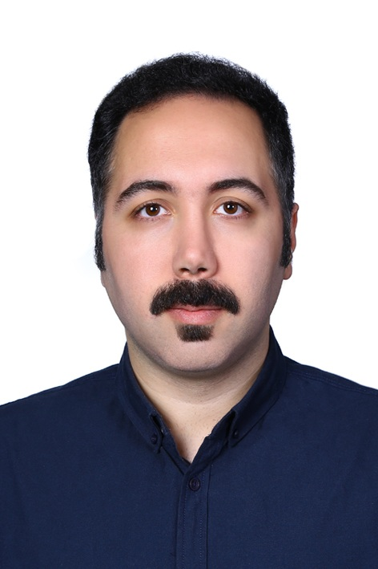

Technology and a willingness to learn
Microsoft server administration and VMware Data Center Virtualization training provide a foundation for developing hands-on support skills. I also work with Excel, PowerPoint, Outlook, Visio, HTML and GitHub.
I’m Ali, an International Management master’s student with an engineering background and training in Microsoft servers and VMware virtualization.
I would like to bring that foundation to the IT Working Student role in Bonn, helping colleagues work smoothly with their everyday technology.
Explore my fit for the role ↓
My experience connects technical learning, organised documentation and helping people understand unfamiliar tools.
Microsoft server administration and VMware Data Center Virtualization training provide a foundation for developing hands-on support skills. I also work with Excel, PowerPoint, Outlook, Visio, HTML and GitHub.
I have taught Excel to engineering students and now teach Strategic Sourcing. As an International Student Mentor, I help people navigate unfamiliar information — experience I would bring to employee onboarding and everyday questions.
Project coordination taught me to maintain documentation, track open actions and work across technical and commercial teams. I would apply those habits while learning your asset management and ticketing systems.
Work part-time alongside my studies, supporting delivery operations and collaborating with a multicultural team.
Prepare practical learning materials and explain commercial and analytical concepts to master’s students.
Support test planning, validation, documentation and deliverable tracking with Hochschule Fresenius and KUKUK Ingenieure. Project currently in progress.
Coordinate technical and commercial stakeholders, maintain reports and track priorities and milestones across industrial work.
Conduct technical research and economic evaluation, and deliver Microsoft Excel training to engineering students.
M.A. International Management · Project Management focus
Hochschule Fresenius · March 2026 – expected 2028 · Current GPA 1.2
M.Sc. and B.Sc. Chemical Engineering
Iran University of Science and Technology · Simulation, Modeling and Control specialisation at master’s level
Microsoft server administration and VMware virtualization
MCSA and VMware Data Center Virtualization training certificates · Tehran Institute of Technology · 2025
I would welcome a conversation about supporting the IT team in Bonn and would also be enthusiastic about opportunities in Cologne.